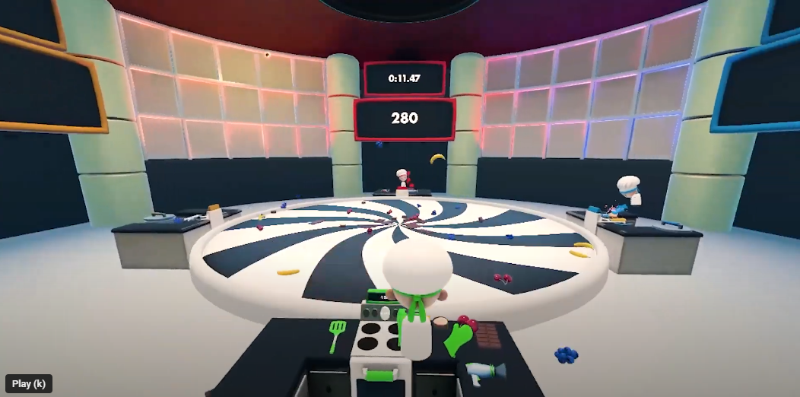

Muffin Fight
2023
VR | Multiplayer game | Unity
Role: Unity Developer
Check it out on Steam!A multiplayer VR game about cooking muffins and throwing them at your friends.
For the initial development, I acted as a mentor for the developers working on it because I was busy with other projects. It was their first time working on a multiplayer project so I gave advice and pair programmed to help them get unstuck and keep development running smooth. For a later update, I reworked the networking to allow for a social hub where players join by default. I also implemented voice chat and other game options missing from the original game.